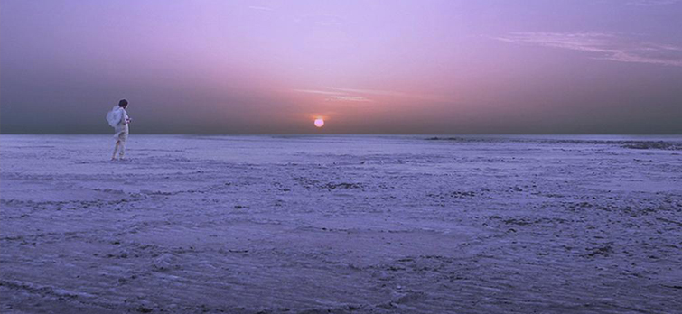
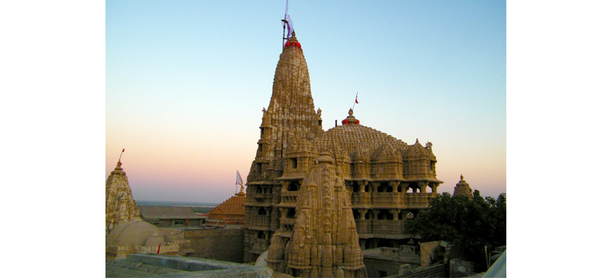
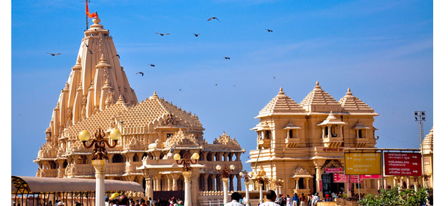
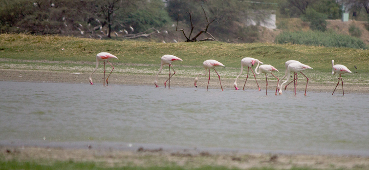
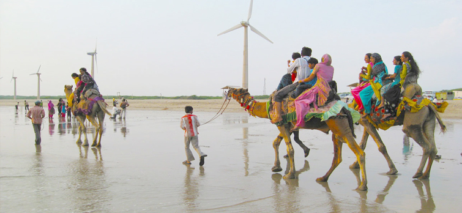
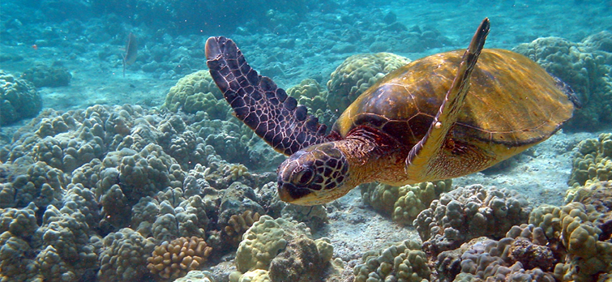
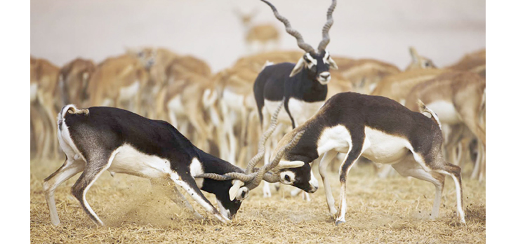
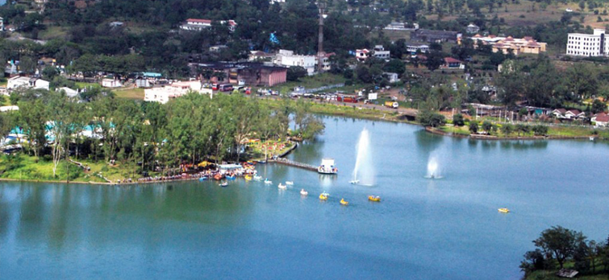
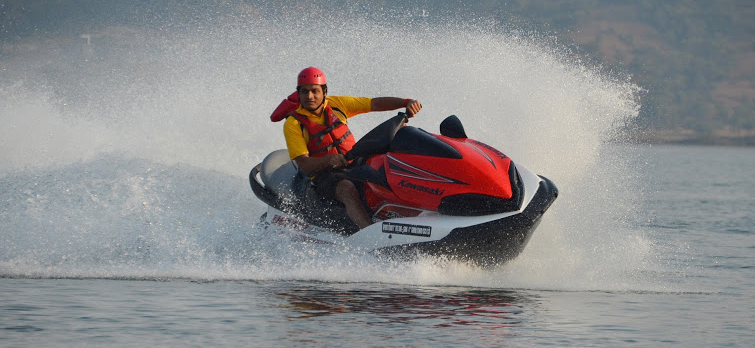
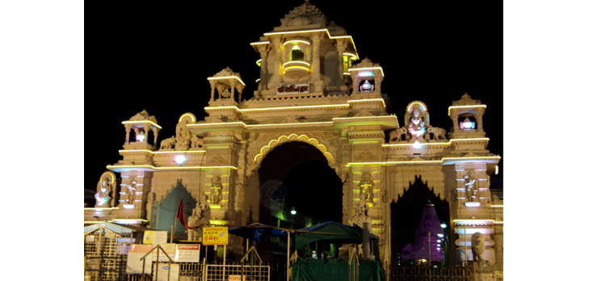

Planning For Weekends Below Are Some Awesome Places To Visit In Gujarat.
- Great Rann of Kutch

The White Salt Desert is definitely a place that one should visit in his lifetime. The Great Rann of Kutch is by far the largest white salt desert in India and is truly a magnificent destination to be at. One can enjoy camel safaris on a moonlit night (During the Rann Utsav in December-March). Accommodation is available at the nearby villages called Dhordo and Hodka. It is once in a lifetime experience to be at Great Rann, and is indeed one of the best weekend tours you will ever plan in your life!
- Dwarka

Dwarka needs no introduction; this sacred city of Lord Krishna has unspoiled charm that draws a large number of Hindu devotees all year long. One of the four Dhams in India (Hindu Pilgrimage Destinations), Dwarka is nestled in the lap of Gujarat, offering divinity and abundant peace to everyone who visits it. Amongst the most important places to visit in Dwarka, Dwarkadhish Temple is a five-storied shrine believed to had been constructed 1400 years ago. Other than this, you would love to see Bet Dwarka, Okha (30kms from Dwarka) and different temples dedicated to Rukmini (Lord Krishna’s Wife), Mirabai, Narsinh Mehta and Shank Narayan.
- Somnath

A holy town in Junagadh district, Somnath is revered highly as one of the places where the Jyotirlingas of Lord Shiva are kept. The temple is the centre point of all the local and tourists activities of the town. Although, Somnath Temple is the reason behind Somnath being a popular tourist attraction, another reason can be its scenic location near the coast. So, other than visiting temples and cleansing one’s soul, tourists can enjoy some good time at the beach as well. Junagadh Gate and Panch Pandav Gufa (Cave) are the famous tourist destinations in Somnath.
- Thol Lake Bird Sanctuary

Do you fancy bird watching on a weekend in Gujarat? Well, Thol Lake Bird Sanctuary is the perfect place to be at! Situated about 40kms from Ahmedabad, Thol is a freshwater lake that is surrounded by marshland. The picture perfect setting has made this a home to about 100 species of birds and quite a popular place for bird watching in Gujarat. Cranes, geese, flamingoes, pelicans, egrets, herons, spoonbills, ducks, whistling teals and many other migratory birds nest and breed here. Thol Lake Bird Sanctuary also makes for a great getaway from the maddening rush of the city; the place is just so serene and beautiful that you would wish to stay a bit longer each time you visit here.
- Mandvi

You can expect a SUN, SAND and BEACH holiday at Mandvi. Once, a famous port in Gujarat, Mandvi today is a popular tourist attraction in Gujarat. It was also an important shipbuilding centre; however, the art has been discontinued. Nevertheless, there are still some locals who make wooden ships by their hands on the bank of Rukmavati River. The beaches are clean and undoubtedly beautiful; the cacophony of the flamingos is the most obvious ones here. Other than the beaches, Vijay Vilas Palace is worth seeing in Mandvi.
- Marine National Park

If you have been to enough wildlife reserves and this weekend looking for something new to explore, then it’s time that you should be introduced to India’s first Marine National Park, which is situated on the shore of the Gulf of Kutch. This national park is one of its kinds as it conserves the marine life that consist of coral, Dugong and smaller cetaceans (Finless Porpoise, Common Dolphin, Bottlenose Dolphin, Indo-Pacific Humpback Dolphin), large whales like Blue Whales, Sei Whales, Humpback Whales, and Sperm Whales. At this marine park, coral reefs are the prime tourist attraction. In fact it is the only place in the world where one can view the reefs without diving into the water.
- Velavadar Blackbuck National Park

Another fantastic wildlife tourism park in Gujarat, as the name suggests, this national park is home to a rare species of blackbuck. Situated in Bhal region, this national park is a treat for the wildlife enthusiasts, as along with spotting the whimsical blackbucks, they can even sight sizable amount of bird species that consider the small wetland in the park their home. The best part is that you have the option to explore Velavadar Blackbuck National Park on foot as well.
- Saputara

Perhaps the only hill station in Gujarat, Saputara is unlike any other places that you would visit in the state. Nestled amidst the Sahyadris, Saputara offers respite from the hot and humid climate. Surrounded by green rolling hills, this hill station is quite picturesque. The soothing air and the charming people add to the reasons as to why one should visit Saputara. The main attractions here include Hatgad Fort, Sunrise point, The Ropeway, Boating in Lake Saputara and Artist Village. This beautiful town is situated about 170kms from Surat.
- Blues Adventures

If water adventure is what you are looking for on a weekend, then Blues Adventure in Surat is the perfect place for you. This water-cum-theme park is an excellent place to rejuvenate your abused body and soul. Take your friends or family here and spend some quality time with them! There are many water sports like Jet-Ski, Kayaking, Speed Boating and Bumper Ride available here that you can choose from OR may be give them a try. You can also set out for a romantic sail on a pedal boat with a loved one and also enjoy a number of rides in the open-sky amusement park. Dining in Blues adventure is also an exhilarating experience; you can opt for eating at Halka-Fulka, which is a multi-cuisine restaurant or can go for fine dining at Eat:Ri, which has a deck facing the River Tapti. Along with the romantic environs you are served some of the most delicious food here.
- Ambaji

A quaint little town, Ambaji is located in Banaskantha district in Gujarat. We are more familiar with Ambaji as one of the important Shaktipeeths in India. Ambaji is situated about 180kms from Ahmedabad and can be an ideal place for a weekend break for those who want to pay homage to the Goddess Sati or Shakti. A small town with the beautiful backdrop of Arasur Hills and surrounded by thick forests, Ambaji is away from the confines of the bustles of city life and thus offers a peaceful time to unwind and get drenched in spirituality. Gabbar Hill, Kamakshi Mandir, Kailash Hill Sunset, Koteshwar, Kumbhariya and Mansarovar are the major attractions in Ambaji.